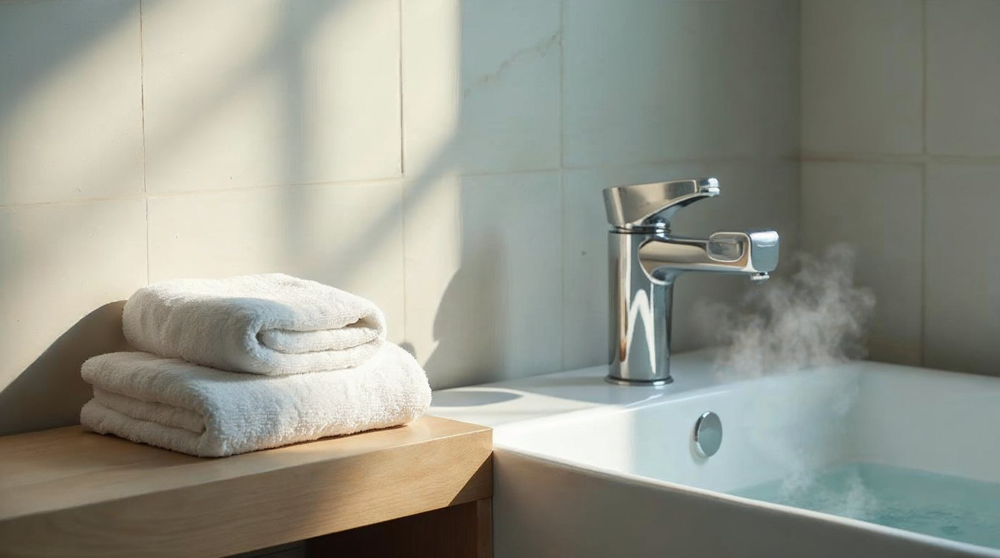

이종호 한의사 감수좋은꿈참사랑한의원 대표원장 (한의사 면허번호 19769)발행 2026-11-23 · 수정 2026-11-26
이 글의 차례
- 왜 이런 불편이 생길 수 있나요
- 저림과 감각 둔함은 근육의 움직임과 어떻게 다른가요?
- 서서히 생긴 저림에는 어떤 원인이 있을 수 있나요?
- 이런 상황에서 저림이 생기지 않았나요?
- 스스로 점검해 보세요
- 먼저 이렇게 여쭙니다
- 일상에서 먼저 해 볼 수 있는 것
- 대상포진이 걱정될 때는 무엇을 살필까요?
- 치과 치료 뒤 저림이라면 무엇을 알려 주면 될까요?
- 당뇨나 고혈압이 있는 분은 무엇을 챙길까요?
- 숨이 가쁠 때 입 주변이 저린다면 어떻게 하나요?
- 검사에서 이상이 없다는데 왜 계속 신경이 쓰일까요?
- 오래 앉아 일하는 자세와 목 긴장도 관련이 있나요?
- 잠과 피로는 어떻게 챙길까요?
- 생활에서는 무엇을 조심하면 좋을까요?
- 불안이 클 때는 어떻게 하나요?
- 얼마나 지켜보고 언제 다시 확인할까요?
- 한의원에서 함께 살필 수 있는 경우
- 이렇게 기록해 오시면 상담이 쉬워집니다
- 이런 증상은 먼저 확인이 필요합니다
얼굴 한쪽이 저리거나 감각이 둔하다면 먼저 신경과 등 의과에서 확인이 필요한 증상인지부터 보아야 합니다. 갑자기 생겼거나, 얼굴 처짐·말 어눌함·한쪽 팔다리 힘 빠짐 가운데 하나라도 함께 있다면 기다리지 말고 바로 가까운 응급실로 가셔야 합니다.
검사에서 큰 이상이 없는데 저림이 남는다면, 그때 얼굴과 목 주변 긴장, 피로와 잠을 함께 살핍니다.
왜 이런 불편이 생길 수 있나요
- 얼굴의 감각을 전하는 신경이 자극을 받거나 눌리면 한쪽 볼이나 입 주변이 저리고 둔하게 느껴질 수 있습니다.
- 물집이 생기기 전 며칠 동안 찌릿한 통증과 저림이 먼저 오는 대상포진처럼, 바이러스 감염이 원인인 경우도 있습니다.
- 뇌혈관 문제(뇌졸중)가 얼굴 감각 이상으로 시작하기도 해, 갑자기 생긴 경우는 바로 가까운 응급실에서 확인해야 합니다.
- 큰 피로와 스트레스, 이 악물기로 얼굴 근육이 긴장한 상태에서 불편을 더 크게 느끼기도 합니다.
저림과 감각 둔함은 근육의 움직임과 어떻게 다른가요?
얼굴의 불편은 크게 두 갈래로 나누어 봅니다. 하나는 감각의 문제로, 만졌을 때 느낌이 무디거나 찌릿하고 저린 경우입니다. 다른 하나는 움직임의 문제로, 눈을 감거나 웃거나 입을 다무는 근육이 제대로 움직이지 않는 경우입니다.
감각을 전하는 신경과 근육을 움직이는 신경은 서로 다릅니다. 그래서 저림만 있는지, 움직임에도 변화가 있는지를 구분하는 것이 무엇을 먼저 확인할지 정하는 첫걸음입니다. 거울을 보며 양쪽 눈썹을 올리고, 눈을 꼭 감고, 이를 보이며 웃어 보았을 때 양쪽이 같은지 살펴보세요.
움직임에 변화가 있다면 아래 '먼저 확인이 필요합니다'에 적은 경우인지부터 살펴 주세요. 감각만의 변화라도 원인을 확인하는 것은 의과의 몫이어서, 한의원은 그 확인 뒤에 함께하는 자리라고 생각해 주시면 됩니다.
서서히 생긴 저림에는 어떤 원인이 있을 수 있나요?
사랑니를 뽑거나 임플란트, 신경 치료처럼 치과 치료를 받은 뒤 입술이나 턱 쪽이 저린 경우가 있습니다. 치료 부위 가까이 지나가는 신경이 자극을 받은 것일 수 있어, 이때는 치료한 치과에 먼저 알리시는 것이 좋습니다.
코 옆 광대 안쪽 공간에 염증이 생기면 볼이 묵직하고 둔하게 느껴지기도 하고, 당뇨처럼 신경에 영향을 주는 질환이나 특정 영양소 부족이 저림과 관련되기도 합니다. 긴장해서 숨을 빠르게 몰아쉴 때 입 주변과 손끝이 저려 오는 경우도 있습니다.
편두통이 오기 전에 얼굴이나 손이 저린 분도 있습니다. 이렇게 원인이 여러 갈래여서, 서서히 생긴 저림도 신경과나 이비인후과, 치과 같은 의과 확인을 먼저 받아 보시길 권합니다.
처음에는 대수롭지 않게 여겼다가 며칠이 지나도 그대로여서 진료실을 찾으시는 분이 많습니다. 그때는 시작된 날짜가 흐릿해지기 쉬우니, 저림을 처음 알아차린 날을 달력에 표시해 두세요.
이런 상황에서 저림이 생기지 않았나요?
- 예를 들어 사랑니를 뽑은 뒤 아랫입술 한쪽이 계속 둔한 경우
- 예를 들어 감기를 앓은 뒤 코 옆 볼이 묵직하고 눌린 듯한 경우
- 예를 들어 야근이 몰린 주에 볼 한쪽이 찌릿찌릿한 경우
- 예를 들어 아침에 턱이 뻐근하면서 볼 쪽까지 둔한 느낌이 드는 경우
- 예를 들어 긴장되는 자리에서 숨이 가빠지며 입 주변이 저렸던 경우
어떤 일이 있은 뒤 저림이 시작되었는지 떠올려 보세요. 치과 치료, 감기, 큰 피로처럼 앞서 있었던 일이 원인을 찾는 중요한 단서가 됩니다.
저림을 설명할 때는 '찌릿하다', '먹먹하다', '남의 살 같다', '벌레가 기어가는 것 같다'처럼 느낌을 그대로 말씀해 주세요. 느낌의 차이가 원인을 좁히는 데 도움이 됩니다. 하루 중 언제 더 심한지, 만지거나 씻을 때 달라지는지도 함께 떠올려 보세요.
스스로 점검해 보세요
- 저림이 시작된 날짜를 알고 있다
- 저린 범위가 볼, 입술, 이마 가운데 어디인지 말할 수 있다
- 범위가 넓어지거나 좁아지는 변화가 있었다
- 최근 치과 치료를 받았다
- 피곤하거나 긴장한 날 더 심하다
- 당뇨나 고혈압으로 약을 먹고 있다
- 의과 진료를 받고 결과를 들었다
이 항목들은 스스로 판단하기 위한 것이 아니라, 진료실에서 빠짐없이 이야기하기 위한 준비입니다. 적어 오시면 의과에서도, 한의원에서도 도움이 됩니다.
먼저 이렇게 여쭙니다
- 언제부터, 얼마나 갑자기 생겼나요?
- 얼굴 근육이 처지거나 말이 어눌해진 느낌이 있나요?
- 신경과 진료나 검사를 받아 보셨나요?
- 최근 피로나 스트레스가 컸나요?
- 얼굴에 물집이나 발진이 생겼나요?
첫 방문에서는 증상이 생긴 과정과 의과에서 받은 검사, 들은 설명을 먼저 여쭙습니다. 그다음 맥을 짚고, 얼굴과 턱, 목 주변 근육의 긴장을 손으로 확인하며 잠과 피로, 소화 상태도 함께 살핍니다.
검사를 아직 받지 않으셨다면 진료보다 의과 확인을 먼저 안내합니다. 결과지가 있다면 가져오시면 그 내용을 바탕으로 이어서 살핍니다.

일상에서 먼저 해 볼 수 있는 것
- 증상이 생긴 시각과 변화를 기록하기
- 갑자기 생겼다면 기다리지 말고 바로 가까운 응급실 찾기
- 찬바람을 직접 맞지 않게 하기
- 잠과 휴식을 충분히 챙기기
대상포진이 걱정될 때는 무엇을 살필까요?
대상포진은 물집이 보이기 며칠 전부터 한쪽 얼굴이 따끔하거나 화끈거리고 저린 느낌으로 시작하기도 합니다. 그래서 저림이 시작된 뒤 며칠 동안은 이마, 눈 주위, 볼, 귀 주변 피부에 붉은 반점이나 작은 물집이 생기는지 거울로 살펴보세요.
발진이 보이면 늦지 않게 피부과나 내과 진료를 받으시길 권합니다. 특히 눈 주위나 귀 주변에 생긴 경우는 눈과 귀에도 영향을 줄 수 있어 더 서둘러 확인하는 것이 좋습니다. 큰 피로가 쌓였거나 몸이 지친 시기에 잘 생겨, 그런 시기였다면 진료 때 함께 알려 주세요.
치과 치료 뒤 저림이라면 무엇을 알려 주면 될까요?
치과 치료 뒤 생긴 저림이라면 어떤 치료를 언제 받았는지, 저림이 치료 직후부터였는지 며칠 뒤부터였는지를 기억해 두세요. 이 내용은 치료한 치과에 먼저 알리는 것이 좋고, 치과에서 받은 설명과 경과 안내도 한의원 진료 때 함께 들려주세요.
치료 뒤 저림은 시간이 지나며 범위가 조금씩 줄어드는 경우가 많아, 범위의 변화를 기록해 두는 것이 특히 도움이 됩니다. 그사이 입을 크게 벌리거나 한쪽으로 세게 씹는 일이 불편하다면 그 내용도 적어 두세요.
당뇨나 고혈압이 있는 분은 무엇을 챙길까요?
당뇨가 오래된 분은 손발 저림처럼 신경에 영향을 받는 일이 생길 수 있어, 얼굴 저림이 생겼다면 다니시는 내과에도 꼭 알려 주세요. 최근 혈당과 당화혈색소 수치가 어땠는지도 진료 때 참고가 됩니다.
고혈압이 있는 분은 평소 혈압 기록을 가져오시면 함께 봅니다. 드시는 약은 저림이 있다고 해서 임의로 줄이거나 끊지 마시고, 약이 바뀐 시기와 저림이 시작된 시기가 겹친다면 처방한 의사와 먼저 상의하세요.
숨이 가쁠 때 입 주변이 저린다면 어떻게 하나요?
긴장하거나 불안할 때 숨을 빠르고 얕게 몰아쉬면, 입 주변과 손끝이 저려 오는 느낌이 생길 수 있습니다. 이런 저림은 숨이 가라앉으면 함께 사라지는 경우가 많습니다.
그럴 때는 의자에 앉아 넷을 세며 코로 들이쉬고, 여섯을 세며 입으로 천천히 내쉬기를 몇 분 이어 보세요. 다만 이런 일이 처음이거나 숨이 가라앉아도 저림이 그대로라면 의과 확인을 먼저 받으세요.
검사에서 이상이 없다는데 왜 계속 신경이 쓰일까요?
큰 이상이 없다는 말을 들어도 얼굴의 감각은 하루에도 몇 번씩 의식하게 되는 곳이라 마음이 놓이지 않는 경우가 많습니다. 세수할 때, 화장할 때, 음식을 먹을 때마다 다시 느껴지니 걱정이 쉽게 사라지지 않습니다.
이런 걱정이 길어지면 얼굴을 자꾸 만지고 확인하게 되고, 그럴수록 감각에 더 예민해지는 고리가 생기기도 합니다. 피로와 잠 부족, 긴장이 겹치면 같은 저림도 더 크게 느껴집니다.
그래서 검사 뒤 남는 불편을 살필 때는 얼굴만이 아니라 잠과 피로, 마음의 긴장을 함께 봅니다. 몸 전체가 조금 편안해지면 저림을 의식하는 정도도 달라지는 분이 많습니다.
오래 앉아 일하는 자세와 목 긴장도 관련이 있나요?
얼굴 감각의 원인은 의과에서 확인해야 하지만, 목과 어깨, 턱의 긴장이 얼굴의 불편을 더 크게 느끼게 하는 경우는 자주 봅니다. 하루 종일 모니터 앞에서 고개를 내밀고 이를 꽉 문 채 일하면 턱과 볼, 관자놀이 근육이 쉬지 못합니다.
한 시간에 한 번은 어깨를 크게 돌리고, 턱에 힘을 빼고 위아래 이를 살짝 떼어 보세요. 입을 천천히 크게 벌렸다 다무는 동작을 몇 번 하는 것도 턱 주변 긴장을 푸는 데 도움이 됩니다. 아프게 하지 말고 편한 범위에서만 하세요.
잠과 피로는 어떻게 챙길까요?
얼굴 저림으로 오시는 분 가운데 최근 몇 주 동안 잠을 크게 줄이고 무리했다는 분이 많습니다. 잠이 부족하면 몸이 작은 감각에도 예민해져, 같은 저림도 더 거슬리게 느껴집니다.
잠드는 시각과 일어나는 시각을 일정하게 맞추고, 하루 7시간 안팎의 잠을 확보해 보세요. 늦은 시간 카페인과 술은 잠을 얕게 하니 줄이는 것이 좋습니다. 피로가 쌓인 시기라면 일정 가운데 미룰 수 있는 것을 하나쯤 덜어 내는 것도 몸을 돌보는 방법입니다.
생활에서는 무엇을 조심하면 좋을까요?
감각이 둔한 쪽은 뜨거운 것을 늦게 알아차릴 수 있습니다. 뜨거운 국이나 차를 마실 때는 온도를 먼저 확인하고, 세수할 때도 미지근한 물을 쓰세요. 면도나 피부 관리 때도 둔한 쪽은 조금 더 조심스럽게 해 주세요.
음식을 한쪽으로만 씹거나 이를 꽉 무는 습관이 있다면 줄여 보세요. 턱과 볼 근육이 오래 긴장하면 얼굴의 불편이 더 크게 느껴질 수 있습니다. 찬바람이 부는 날은 마스크나 목도리로 얼굴을 가리고, 에어컨 바람이 얼굴에 바로 닿지 않게 해 주세요.
잠이 부족하고 피로가 쌓인 주에 저림이 심해진다면 그것도 중요한 단서입니다. 잠드는 시각을 일정하게 하고, 무리한 일정이 이어질 때는 중간에 쉬는 날을 넣어 보세요.
진료 때 걱정되는 점을 미리 적어 오시는 것도 좋습니다. 막상 진료실에 앉으면 묻고 싶던 것을 잊기 쉬운데, 적어 온 질문을 하나씩 짚어 가면 궁금한 것을 남기지 않고 돌아가실 수 있습니다. 가족과 함께 오셔도 물론 괜찮습니다.
불안이 클 때는 어떻게 하나요?
얼굴의 감각 이상은 큰 병이 아닐까 하는 걱정을 부르기 쉽습니다. 의과 검사를 받고 설명을 들었다면, 그 내용을 메모해 두고 걱정이 밀려올 때 다시 읽어 보세요. 막연한 걱정보다 확인한 사실을 붙잡는 것이 마음을 가라앉히는 데 도움이 됩니다.
하루에 몇 번씩 얼굴을 만져 확인하는 습관이 있다면, 확인하는 시간을 아침저녁 한 번씩으로 정해 보세요. 확인 횟수가 줄면 감각에 쏠린 주의도 조금씩 느슨해집니다.
얼마나 지켜보고 언제 다시 확인할까요?
의과 확인을 마친 뒤 생활 습관을 손보며 2~4주쯤 저린 범위와 정도를 기록해 보세요. 범위가 그대로이거나 조금씩 줄어든다면 지켜보며 함께 살필 수 있습니다.
저린 범위가 넓어지거나, 감각이 점점 더 둔해지거나, 처음과 다른 불편이 더해진다면 다음 진료를 기다리지 말고 진료받은 의과에 다시 알리세요.
한의원에서 함께 살필 수 있는 경우
- 의과 검사에서 큰 이상이 없는데 저림이 남는 경우 얼굴과 목 주변 긴장, 피로를 함께 살핍니다.
- 피로가 쌓이면 증상이 심해지는 경우 잠과 생활 리듬을 함께 살핍니다.
- 얼굴 불편으로 불안이 큰 경우 마음의 부담을 함께 살핍니다.
좋은꿈참사랑한의원에서는 먼저 증상이 생긴 과정과 의과 검사 결과를 충분히 듣고, 위험 신호가 없는지부터 다시 확인합니다. 검사를 아직 받지 않으셨다면 신경과나 응급실을 먼저 안내합니다.
검사 뒤 남는 불편에는 진맥을 기본으로 얼굴·목 주변 긴장과 잠, 피로를 살펴 침, 한약 상담 가운데 상태에 맞는 방법을 정합니다. 귀가 전에는 증상이 달라질 때 바로 가까운 응급실이나 신경과로 가야 할 신호를 알려 드립니다.
이렇게 기록해 오시면 상담이 쉬워집니다
- 증상이 처음 생긴 날짜와 시각, 갑자기였는지
- 저린 범위(볼, 입 주변, 이마 등)와 변화
- 신경과·응급실 진료 결과와 검사지
- 복용 중인 약과 앓고 있는 질환(고혈압, 당뇨 등)
기록할 때는 얼굴 그림을 하나 그려 저린 곳에 색을 칠해 두면 좋습니다. 일주일에 한 번씩 같은 그림에 다시 칠해 보면 범위가 넓어지는지 좁아지는지가 한눈에 보이고, 의과와 한의원 모두에서 상태를 설명하기 쉬워집니다.
이런 증상은 먼저 확인이 필요합니다
- 갑자기 얼굴 한쪽이 처지거나 말이 어눌해진 경우(바로 가까운 응급실)
- 한쪽 팔다리 힘 빠짐이나 시야 이상이 함께 있는 경우(바로 가까운 응급실)
이런 신호가 있으면 한의원보다 가까운 병원이나 응급실을 먼저 찾으세요.

여쭙는 것
- 언제부터, 얼마나 갑자기 생겼나요?
- 얼굴 근육이 처지거나 말이 어눌해진 느낌이 있나요?
- 신경과 진료나 검사를 받아 보셨나요?
생활에서 해 볼 것
- 증상이 생긴 시각과 변화를 기록하기
- 갑자기 생겼다면 기다리지 말고 바로 가까운 응급실 찾기
- 찬바람을 직접 맞지 않게 하기
한의원에서 함께 살필 것
- 의과 검사에서 큰 이상이 없는데 저림이 남는 경우 얼굴과 목 주변 긴장, 피로를 함…
- 피로가 쌓이면 증상이 심해지는 경우 잠과 생활 리듬을 함께 살핍니다.
- 얼굴 불편으로 불안이 큰 경우 마음의 부담을 함께 살핍니다.
먼저 확인이 필요한 신호
- 갑자기 얼굴 한쪽이 처지거나 말이 어눌해진 경우(바로 가까운 응급실)
- 한쪽 팔다리 힘 빠짐이나 시야 이상이 함께 있는 경우(바로 가까운 응급실)
한눈에 보는 표
| 구분 | 핵심 |
|---|---|
| 여쭙는 것 | 언제부터, 얼마나 갑자기 생겼나요? 얼굴 근육이 처지거나 말이 어눌해진 느낌이 있나요? |
| 생활에서 해 볼 것 | 증상이 생긴 시각과 변화를 기록하기 갑자기 생겼다면 기다리지 말고 바로 가까운 응급실 찾기 |
| 한의원에서 함께 살필 것 | 의과 검사에서 큰 이상이 없는데 저림이 남는 경우 얼굴과 목 주변 긴장, 피로를 함께 살핍니다. 피로가 쌓이면 증상이 심해지는 경우 잠과 생활 리듬을 함께 살핍니다. |
| 먼저 확인이 필요한 신호 | 갑자기 얼굴 한쪽이 처지거나 말이 어눌해진 경우(바로 가까운 응급실) 한쪽 팔다리 힘 빠짐이나 시야 이상이 함께 있는 경우(바로 가까운 응급실) |
자주 묻는 질문
한의원부터 가도 되나요?
갑자기 생긴 얼굴 감각 이상은 먼저 가까운 응급실에서 확인받으시길 권합니다. 서서히 생긴 저림도 신경과 등 의과 확인을 먼저 받아 보세요.
검사 결과지를 가져가야 하나요?
있으면 가져오시면 함께 참고합니다.
검사에서 이상이 없다는데 왜 계속 저린가요?
피로, 긴장, 신경이 예민해진 상태 등 여러 이유가 있을 수 있어 생활과 함께 살펴봅니다. 증상이 달라지면 다시 의과 확인을 권합니다.
진료 시간은 어떻게 되나요?
좋은꿈참사랑한의원은 평일 09:30~20:00(점심 13:00~14:00), 토·일·공휴일 09:30~15:00에 진료합니다.
좋은꿈참사랑한의원은 재진 때 지난번 이야기부터 이어서 여쭙니다. 진료시간과 예약은 오시는 길에서 확인하세요.
어디서 상담받을 수 있나요?
좋은꿈참사랑한의원은 서울 동작구 만양로2길 2 신성빌딩 3층·5층(서울 동작구 상도동, 7호선 상도역 3번 출구 근처)에 있습니다. 한의사 3명(이종호 대표원장, 조영기 수석진료원장, 정원영 진료원장)이 진료합니다. 진료시간은 평일 09:30~20:00(점심 13:00~14:00), 토·일·공휴일 09:30~15:00이며, 방문 전 전화로 확인을 권합니다. 예약은 네이버 예약, 카카오톡 상담, 전화 02-815-7510로 받습니다.
이 글은 일반적인 건강 정보이며 개인의 진단이나 치료를 대신하지 않습니다. 증상이 있거나 복용 중인 약이 있다면 진료를 통해 확인하세요. 치료 효과는 개인마다 다를 수 있습니다.
작성 기준: 일반적으로 알려져 있는 건강 정보를 참고해 정리했습니다(대표원장 감수). 증상 기록은 1~2주 동안 하루 1회, 비슷한 시간에 적어 오시면 지난 상태와 비교하기 쉽습니다.